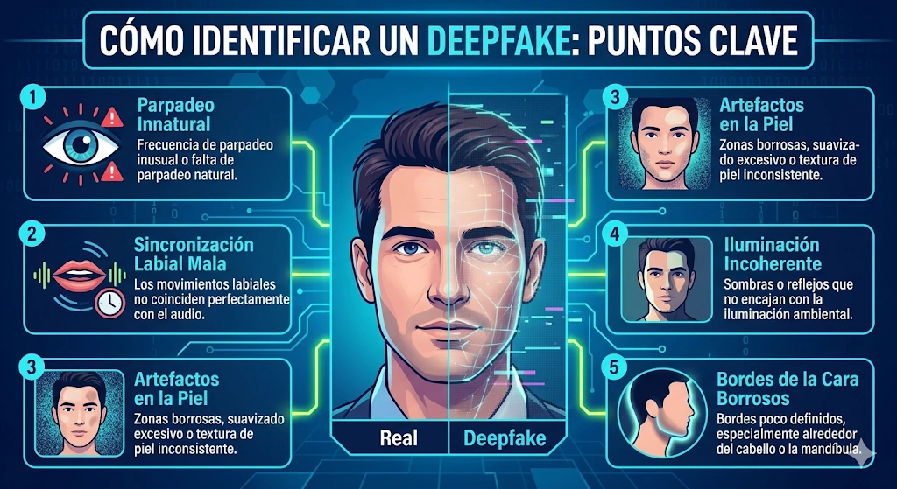

Introducción
Durante siglos, la humanidad ha confiado en un principio fundamental para discernir la verdad: "ver para creer". Una fotografía o una grabación de audio se consideraban pruebas irrefutables de un hecho. Sin embargo, en la actualidad, esta certeza se ha fracturado. El auge de la inteligencia artificial (IA) generativa ha dado lugar a los deepfakes, archivos multimedia manipulados que son prácticamente indistinguibles de la realidad.
En este contexto, la difamación ha evolucionado desde el simple rumor escrito o hablado hacía una amenaza audiovisual altamente sofisticada. El objetivo de este ensayo es analizar cómo los deepfakes representan un nuevo riesgo para la reputación de individuos y organizaciones, evaluando sus mecanismos técnicos, su impacto a través de casos prácticos y la urgencia de establecer soluciones estructurales.
La Mecánica de la Falsedad: ¿Qué son los Deepfakes?
Para comprender el impacto de esta tecnología, es esencial entender cómo funciona. Un deepfake (acrónimo de deep learning o aprendizaje profundo, y fake o falso) es un medio sintético donde una persona en una imagen o video existente es reemplazada por la imagen de otra, o donde se clona su voz con alta precisión (Chesney & Citron, 2019).
Esta tecnología no utiliza herramientas de edición manual tradicionales. En su lugar, se apoya en un concepto técnico llamado Redes Generativas Antagónicas (GANs, por sus siglas en inglés). De manera sencilla, una GAN funciona enfrentando a dos sistemas de inteligencia artificial entre sí:
- El Generador: Su tarea es crear la falsificación (por ejemplo, el rostro falso).
- El Discriminador: Su función es analizar la creación y tratar de descubrir si es falsa, comparándola con imágenes reales.
Este proceso se repite miles de veces. Cada vez que el discriminador detecta la falsificación, el generador aprende y mejora. El ciclo termina cuando el generador logra crear una imagen tan realista que el discriminador no puede notar la diferencia. El resultado es un contenido audiovisual altamente persuasivo que engaña fácilmente al ojo humano (Fallis, 2020).
La Evolución de la Difamación en la Era Digital
Tradicionalmente, la difamación implicaba publicar una declaración falsa que causaba daño a la reputación de un tercero. Los tribunales y la sociedad tenían herramientas para rastrear el origen de una carta, un artículo de periódico o una transmisión de televisión.
Por el contrario, la difamación impulsada por deepfakes es exponencialmente más peligrosa por tres factores principales:
- Hiperrealismo: El cerebro humano está programado para creer en lo que ve y escucha. Un video falso genera una respuesta emocional inmediata y profunda antes de que intervenga la lógica.
- Viralidad algorítmica: Las redes sociales priorizan el contenido impactante. Un video difamatorio puede ser visto por millones de personas en cuestión de horas.
- La asimetría del desmentido: Toma unos minutos generar y compartir un deepfake, pero desmentir requiere peritajes técnicos costosos y días de relaciones públicas. Para cuando se revela la verdad, el daño reputacional ya está hecho.
Caso Práctico: Manipulación Electoral: El "Robocall" de Joe Biden (2024)
Durante las elecciones primarias del estado de New Hampshire en Estados Unidos, miles de votantes recibieron una llamada telefónica automatizada (robocall). La voz, que sonaba exactamente igual a la del presidente Joe Biden, utilizaba sus frases características e instaba a los ciudadanos a no salir a votar ese día y guardar su voto para las elecciones generales de noviembre.
El audio fue generado sintéticamente por inteligencia artificial por encargo de consultores políticos rivales para suprimir la participación electoral.
Este caso encendió las alarmas internacionales sobre la vulnerabilidad de los procesos democráticos. A diferencia del video, el audio sintético es mucho más barato de producir y más difícil de detectar para el ciudadano común. Llevó a la Comisión Federal de Comunicaciones de EE. UU. (FCC) a prohibir formalmente las llamadas automatizadas con voces clonadas por IA.
Soluciones Estructurales: La Necesidad de Marcos Agnósticos
Afrontar el riesgo de los deepfakes exige abandonar las soluciones temporales o los parches de software aislados. Para que los métodos de verificación y protección sean verdaderamente efectivos, es imperativo diseñar e implementar frameworks de seguridad que sean agnósticos y replicables.
Esto significa que los protocolos de detección y validación de identidad no deben depender de conexiones privativas, de un solo proveedor tecnológico o de integraciones que no generen un valor intrínseco. Un modelo de defensa adecuado debe poder aplicarse de manera universal y estandarizada, ya sea en una gran plataforma de redes sociales, en el sistema de auditoría interna de una corporación o en la infraestructura de una pequeña empresa.
Adicionalmente, el marco legal debe evolucionar. Las leyes actuales de difamación obligan a la víctima a demostrar el daño y la falsedad, una carga probatoria injusta frente a la IA. Es necesario que las jurisdicciones desarrollen normativas que penalicen la creación y distribución maliciosa de contenido sintético, exigiendo también a las plataformas digitales mayor responsabilidad en la contención algorítmica de estos archivos.
Conclusión
La inteligencia artificial es, sin duda, una de las herramientas más transformadoras de nuestra época. No obstante, los deepfakes han abierto una nueva y peligrosa frontera para la difamación, explotando nuestras vulnerabilidades cognitivas y la velocidad de propagación de las redes sociales.
Proteger la integridad digital y la reputación en este nuevo ecosistema requiere una acción inmediata. Al combinar una legislación actualizada, alfabetización digital ciudadana y el desarrollo de frameworks tecnológicos agnósticos y replicables, será posible mitigar estos riesgos. La tecnología puede imitar la realidad, pero está en nuestras manos construir los sistemas necesarios para que la verdad siga prevaleciendo.

Referencias Bibliográficas
- Bond, S. (2024, 23 de mayo). A political consultant faces charges and fines for Biden deepfake robocalls. NPR. https://www.npr.org/2024/05/23/nx-s1-4977582/fcc-ai-deepfake-robocall-biden-new-hampshire-political-operative
- Chesney, R., & Citron, D. K. (2019). Deepfakes and the New Disinformation War: The Coming Age of Post-Truth Geopolitics. Foreign Affairs, 98(1), 147-155.
- Fallis, D. (2020). The Epistemic Threat of Deepfakes. Philosophy & Technology, 34(4), 623-643. https://doi.org/10.1007/s13347-020-00419-2